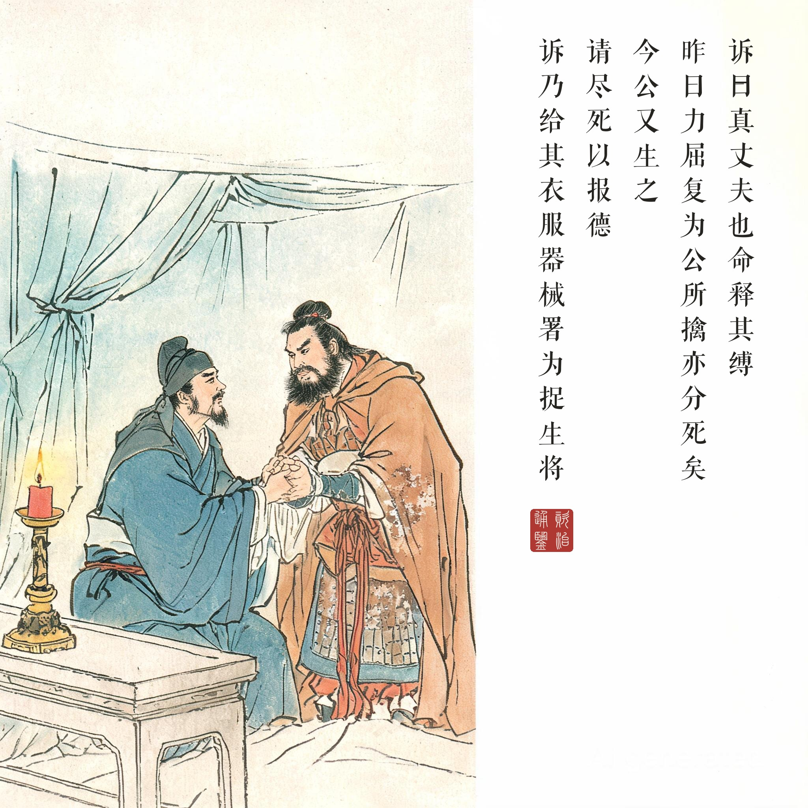
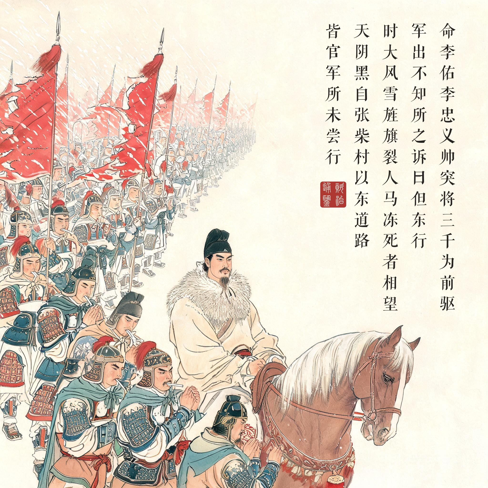
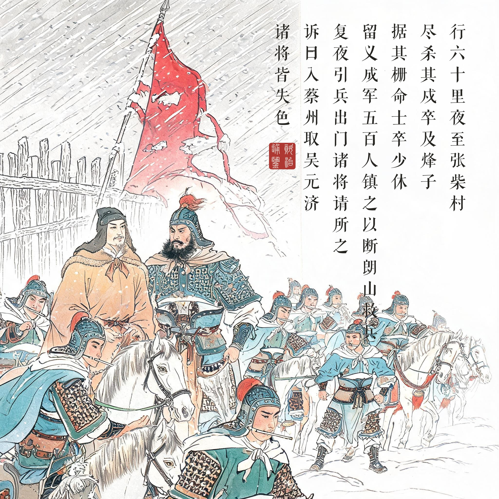
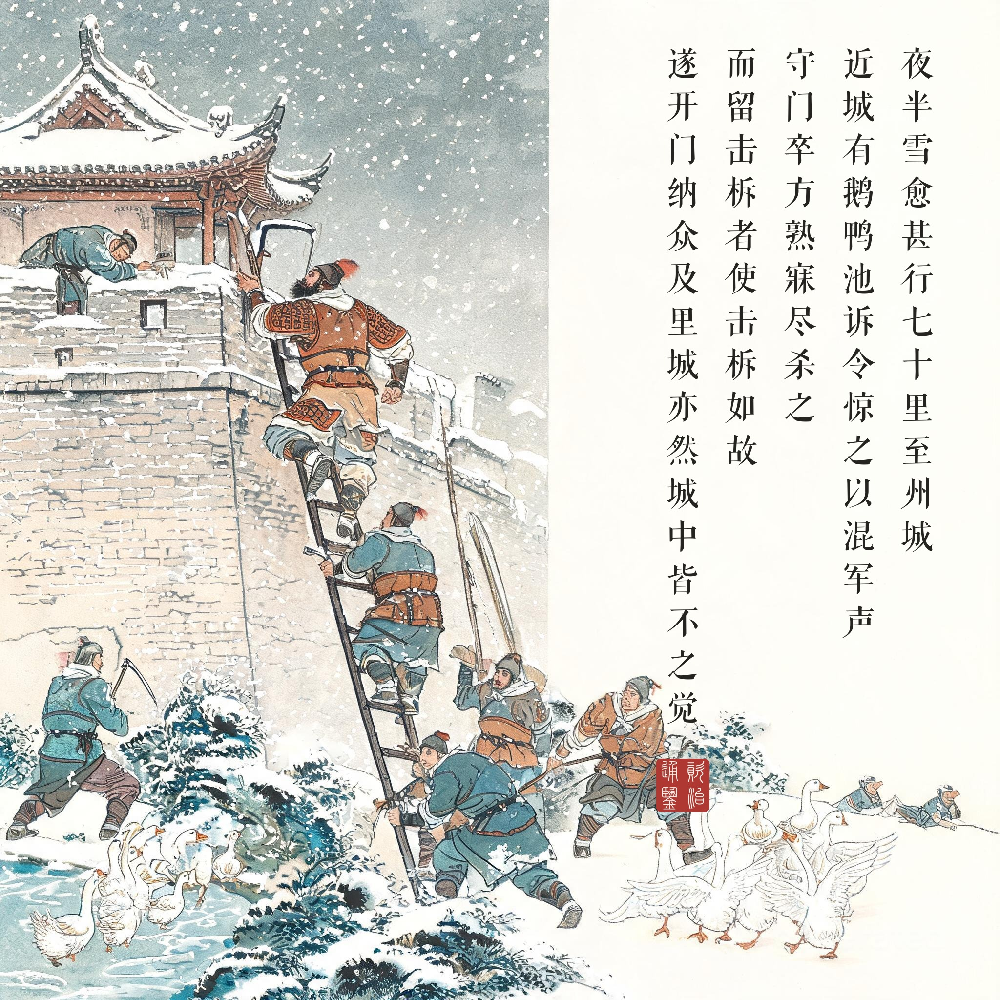
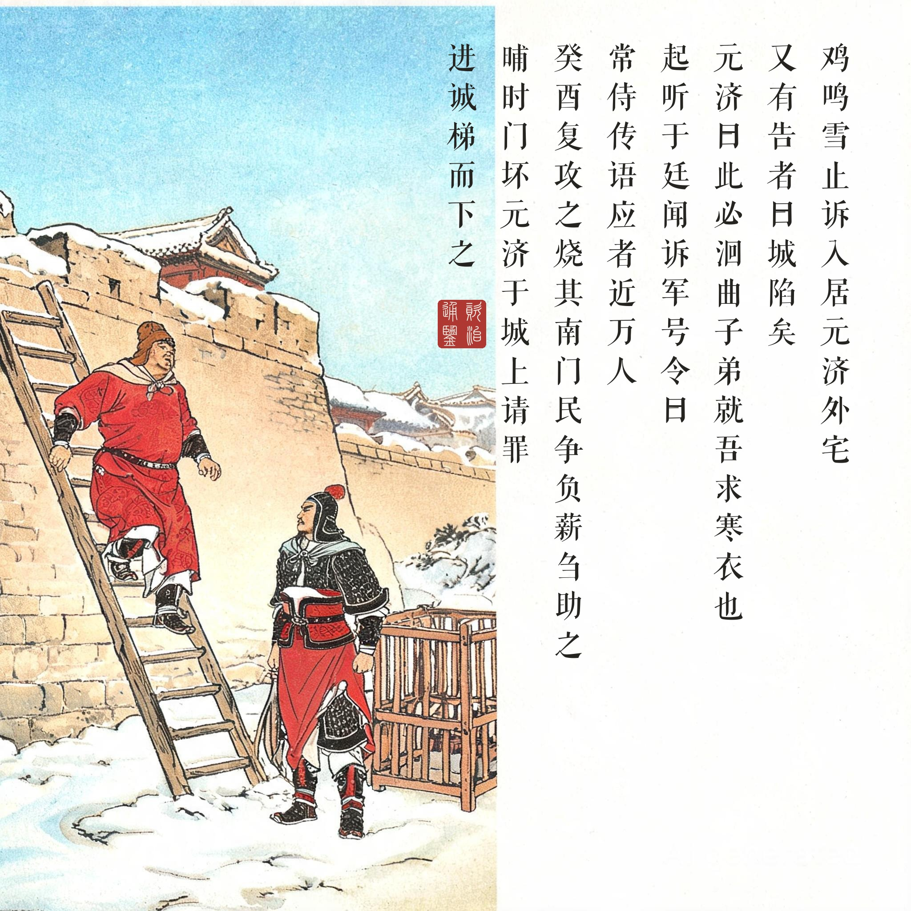

《资治通鉴 · 卷第二百四十 · 唐纪五十六》宪宗昭文章武大圣至神孝皇帝中之下元和十二年（公元 817 年）
（据 daizhigev20《资治通鉴》底本节录。前情：正月李愬至唐州；二月擒丁士良释而用之）
（丁士良）既而召诘之，士良无惧色。愬曰：“真丈夫也！”命释其缚。士良乃自言：“本非淮西士……昨日力屈，复为公所擒，亦分死矣。今公又生之，请尽死以报德！”愬乃给其衣服器械，署为捉生将。……愬遣十将马少良将十馀骑巡逻，遇吴元济捉生虞候丁士良，与战，擒之。（前情补：士良又说降吴秀琳，秀琳荐李祐）……乃募敢死士三千人，号曰突将，朝夕自教习之，使常为行备，欲以袭蔡。会久雨，所在积水，未果。……辛未，李愬命马步都虞候、随州刺史史旻等留镇文城，命李祐、李忠义帅突将三千为前驱，自与监军将三千人为中军，命李进诚将三千人殿其后。军出，不知所之。愬曰：“但东行。”行六十里，夜，至张柴村，尽杀其戍卒及烽子。据其栅，命士卒少休，食干Я，整羁靮，留义成军五百人镇之，以断朗山救兵。命丁士良将五百人断洄曲及诸道桥梁，复夜引兵出门。诸将请所之，愬曰：“入蔡州取吴元济！”诸将皆失色。监军哭曰：“果落李祐奸计！”时大风雪，旌旗裂，人马冻死者相望。天阴黑，自张柴村以东道路，皆官军所未尝行，人人自以为必死，然畏愬，莫敢违。夜半，雪愈甚，行七十里，至州城。近城有鹅鸭池，愬令惊之以混军声。自吴少诚拒命，官军不至蔡州城下三十馀年，故蔡人不为备。壬申，四鼓，愬至城下，无一人知者。李祐、李忠义鎌其城为坎以先登，壮士从之。守门卒方熟寐，尽杀之，而留击柝者，使击柝如故，遂开门纳众。及里城，亦然，城中皆不之觉。鸡鸣，雪止，愬入居元济外宅。或告元济曰：“官军至矣！”元济尚寝，笑曰：“俘囚为盗耳！晓当尽戮之。”又有告者曰：“城陷矣！”元济曰：“此必洄曲子弟就吾求寒衣也。”起，听于廷，闻愬军号令曰：“常侍传语！”应者近万人。元济始惧，曰：“何等常侍，能至于此！”乃帅左右登牙城拒战。……癸酉，复攻之，烧其南门，民争负薪刍助之。晡时，门坏，元济于城上请罪，进诚梯而下之。甲戌，愬以槛车送元济诣京师。
（丁士良被擒后）李愬召来讯问，丁士良毫无惧色。李愬说：“真是大丈夫！”命人解开他的绑缚。丁士良于是自述：“我本不是淮西人……昨天力竭，又被您擒获，本该死了。如今您又让我活，请以死报德！”李愬给了他衣服器械，任他为捉生将。……李愬招募敢死之士三千人，号称“突将”，早晚亲自教练，让他们常备行装，准备袭击蔡州。赶上久雨，到处积水，没有成行。……辛未日，李愬命史旻等留守文城，命李祐、李忠义率突将三千为前锋，自己与监军率三千人为中军，命李进诚率三千人殿后。大军出发，没人知道去哪里。李愬只说：“只管往东走。”走了六十里，夜里，到张柴村，杀光了那里的守卒和烽火兵。占据其营栅，命士兵稍作休整，吃干粮，整理马具，留义成军五百人守栅，以切断朗山方向救兵。命丁士良率五百人断洄曲及各处桥梁，再趁夜领兵出栅。诸将问去哪里，李愬说：“进蔡州取吴元济！”诸将都大惊失色。监军哭着说：“果然中了李祐的奸计！”当时大风雪，旌旗冻裂，沿途人马冻死的随处可见。天黑无光，张柴村以东的道路，都是官军从未走过的，人人自认必死，但畏惧李愬，没人敢违令。半夜，雪下得更大，走了七十里，到蔡州城下。城附近有鹅鸭池，李愬命人惊起鹅鸭，用叫声混杂军队的声响。自吴少诚抗拒朝命以来，官军三十年没到过蔡州城下，所以蔡州人毫不设防。壬申日四更，李愬到城下，没有一个人察觉。李祐、李忠义在城墙上鎌出坎穴率先登城，壮士跟着爬上。守门士卒正熟睡，全部杀掉，只留下打更的，让他照常打梆子，于是打开城门放大军入城。到内城，也是如此，城里人都没察觉。鸡叫时，雪停了，李愬进驻吴元济的外宅。有人报告元济：“官军来了！”元济还在睡，笑着说：“不过是俘囚在做盗贼罢了！天亮就把他们都杀了。”又有人来报：“城陷了！”元济说：“这一定是洄曲的子弟兵回来要寒衣。”起身，在庭院里听，听见李愬军队的号令：“常侍传语！”应答的人将近一万。元济这才害怕，说：“什么样的常侍，能打到这个地步！”于是率左右登牙城抵抗。……癸酉日，再次进攻，烧牙城南门，百姓争着背柴草来助。傍晚，城门烧坏，元济在城上请罪，李进诚用梯子接他下来。甲戌日，李愬用囚车把元济送往京师。
以仁袭人的兵法。李愬此役最反常识的地方：他的每一件武器都是敌将。丁士良（淮西捉生虞候）、吴秀琳（文城栅守将）、李祐（吴元淮麾下骑将）——三个本该处死的俘虏，被他一一松绑、给衣、封将、夜谈密谋，最后由李祐亲率突将去鎌开老东家的城墙。《通鉴》在战术之上写的是心理统御：“人人自以为必死，然畏愬，莫敢违”——雪夜里支撑这支军队的不是军法，是半年积累下来的信任。所谓“雪夜入蔡州”千古传诵，其实传诵的是一套领导力。
一场静音的战役。对比全书其他战役的喧哗，蔡州之夜全程在消音：衔枚、风雪掩声、鹅鸭池混声、击柝如故、里城皆然——每一步都在降低噪音。战争的胜负常常取决于声音管理。最妙的是“击柝如故”：杀尽守卒只留一个更夫照常打更——让整座城市在官军入城的时刻仍然深信一切如常。三十六年没见过官军的蔡州，连怀疑的本能都已经退化了，李愬的用兵只是踩着这座城市的信任感走进去。元济那句“俘囚为盗耳”与“洄曲子弟求寒衣”的两误，把安全感写成了死刑判决。
鸡鸣雪止的清晨。五幕的收束落在时间与天气上：鸡叫了、雪停了，官军已经住进了节度使外宅。从张柴村到牙城门坏不过两天——三十六年的割据之乱七十二小时收摊。值得多看一眼的是攻牙城时“民争负薪刍助之”：蔡州的百姓不是被解放的旁观者，是积极的助攻者。淮西之乱从头到尾没有像样的民心基础，吴氏三代人对内盘剥对外称藩，所以这个割据政权在最后一刻没有任何人为它死战。读画看第五幕：雪霁天青、槛车待缚——晨光里的这些兵器都不是用来杀人的了，这是整套连环画里少见的一场“安静的战役”。